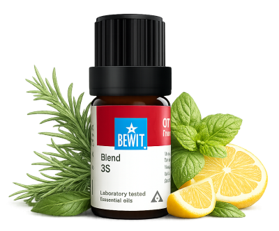

Prokrastinace není lenost — je to většinou signál přetížení, strachu nebo nedostatku energie. Esence vám mohou pomoci přerušit ten kruh a udělat první malý krok. A ten první krok je vždy ten nejtěžší.

pro okamžitý start a chuť do akce
Odkládání, vnitřní útlum, zahlcení nebo pocit, že prostě nemůžete začít. Ukáži vám, jak přirozeně nastartovat energii, přepnout z nečinnosti do pohybu a vrátit si chuť věci dělat.

Rychlá povzbuzující směs pro chvíle, kdy je potřeba okamžitě naskočit do akce.
Podporuje bdělost, rozhodnost a pomáhá přepnout z prokrastinace a stagnace do pohybu.
💧 Jak použít: zředěný v nosném oleji (např. jojobový) nanes na zápěstí — v momentě, kdy cítíte, že zase odkládáte.
Zjistit více →💧 Jak použít: zředěný v nosném oleji nanes na zápěstí a solar plexus ráno nebo kdykoliv potřebujete energetický impulz.
Chci nastartovat💧 Jak použít: přičichni z dlaní nebo přidej 3–5 kapek do difuzéru — okamžitá svěžest máty přeruší odkládání.
Chci se probudit💧 Jak použít: přidej 3–5 kapek do difuzéru na pracovním stole — svěží citrusová vůně rozjasní mysl a podpoří aktivitu.
Chci chuť do věciProkrastinace není lenost — je to většinou signál přetížení, strachu nebo nedostatku energie. Esence vám mohou pomoci přerušit ten kruh a udělat první malý krok. A ten první krok je vždy ten nejtěžší.
Mohlo by vás také zajímat: